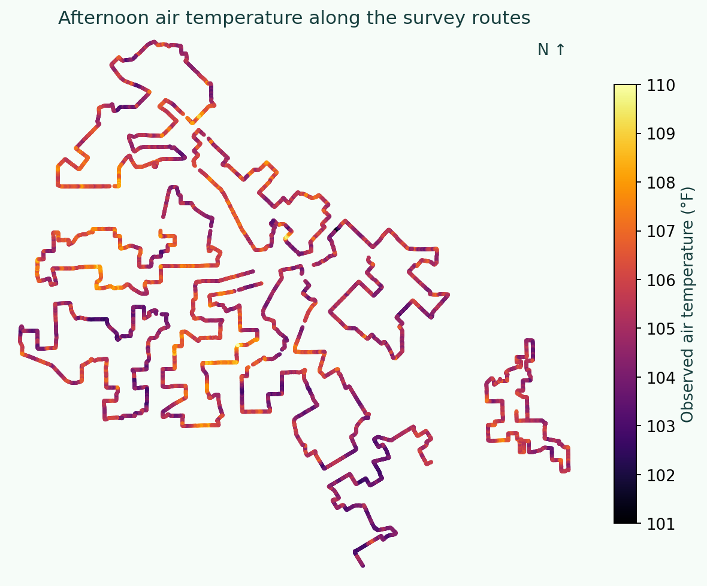
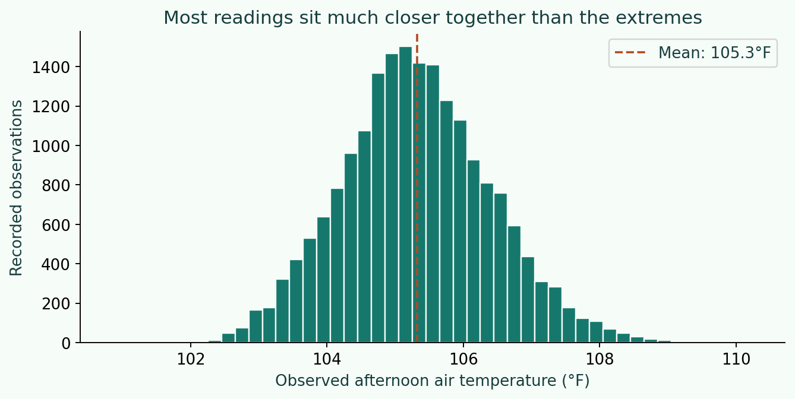
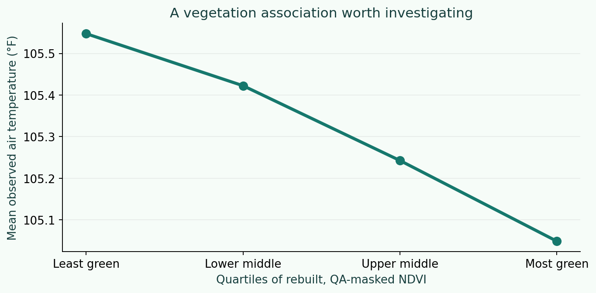
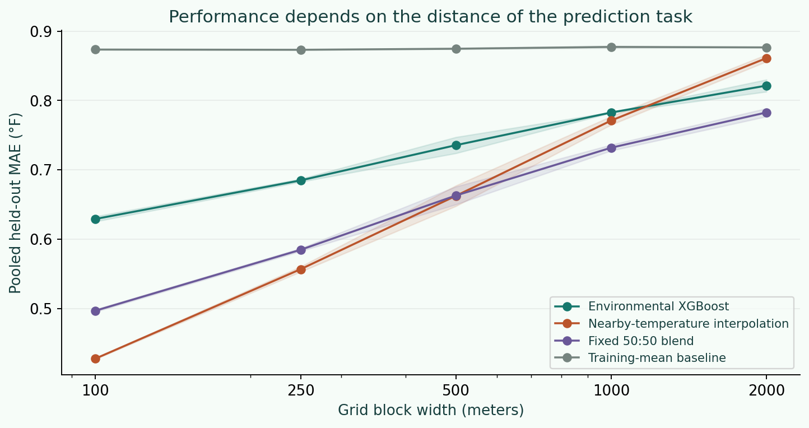
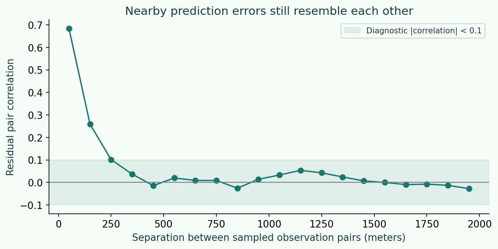
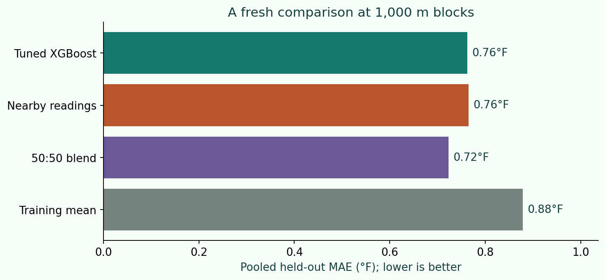
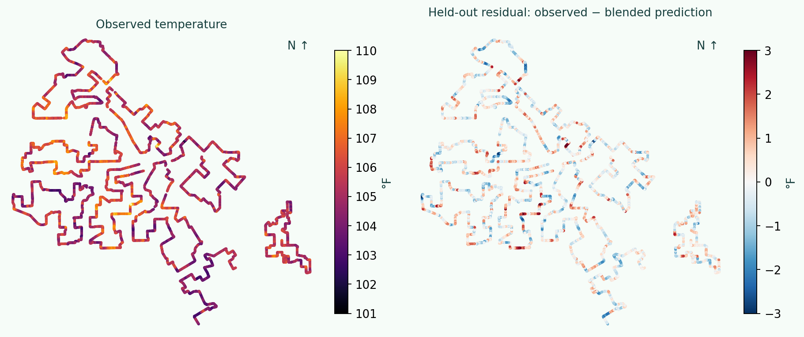
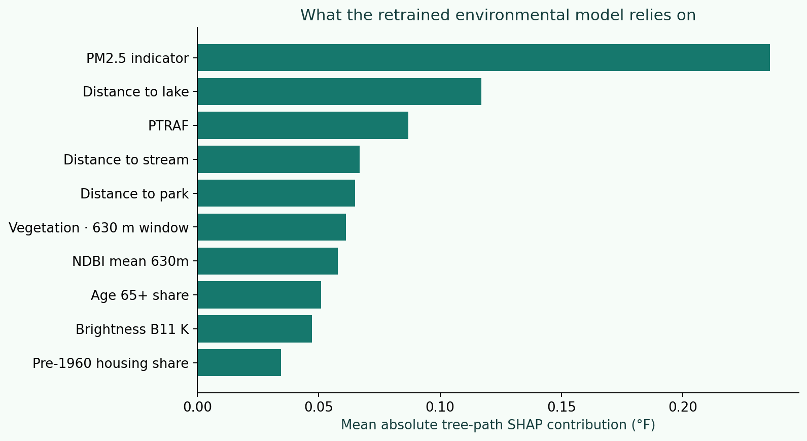
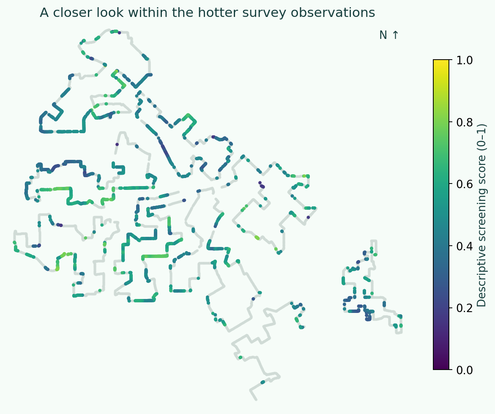

Dallas, Texas · Geospatial machine learning · Original project: December 2024
Same city.
Different heat.
Following the heat through Dallas: from driving-route observations to satellite features, rebuilt models, and a better idea of where the predictions hold up.
“It’s hot in Dallas” is a pretty easy conclusion to reach. I wanted to get a little more specific: where does the heat collect, what does the surrounding area look like, and could that help us decide where to look more closely?
A graduate machine learning project from 2024, rebuilt from the original source files in October 2026. Every figure below was regenerated. The models describe a single survey day; extending them across Dallas or to other days remains an open question.
Tools: Python · GeoPandas · Rasterio · XGBoost · spatial interpolation
Start with the dataJump to the retrained results →01 / Start with a question
Where would I look first?
The idea was to bring a few views of the city together. Temperature tells me where it was hot. Satellite imagery gives me a way to describe the landscape. Neighborhood data adds context about the people who live there.
I wanted to see whether those layers could help predict heat in places the survey missed, then help narrow down places worth investigating for mitigation. That brings up two questions: can I predict another location, and does the information suggest a useful question to ask about that place?
I’m predicting recorded afternoon air temperature in °F. This is different from satellite surface temperature, heat index, or an urban–rural temperature difference. Keeping that distinction straight matters when interpreting the maps.
02 / Look before modeling
The routes are part of the story
Dallas volunteers collected temperature and humidity along driving routes on August 5, 2023. This analysis uses the 19,491 afternoon observations in my project files. The city’s campaign summary describes the broader collection effort.


Notice the lines. These are observations along roads, not a random sample of every neighborhood. Nearby readings can share a street, a landscape, and similar collection conditions. A large row count doesn’t automatically mean a large number of independent examples.
Explore the hotter readings
Move the cutoff to see how the observed pattern changes. These are recorded temperatures, not model predictions.
Loading the observation explorer. The route map above is available without JavaScript.
North is up. Muted dots show all readings; orange dots meet the cutoff. Counts describe observations, rather than people or land area.


The mean was 105.3°F, and the middle 90% of readings ran from 103.5°F to 107.2°F. I would want repeated days before treating this pattern as a lasting neighborhood characteristic.
03 / Describe the surroundings
What does the model know about a place?
The bulk of the work is getting different datasets to describe the same observation. A satellite pixel, a park boundary, and a census block group work at very different scales.
- Keep one row per observation. Start from the original survey points. The old market-area join expanded these into 21,342 rows; the rebuild avoids that duplication.
- Rebuild the satellite features. Use the Landsat metadata to calibrate the source bands, apply cloud, shadow, snow, fill, and saturation masks, then calculate vegetation and built-up indices.
- Look around the point, too. Add mean index values in 210 m and 630 m square windows, alongside the sampled pixel. These describe surrounding landscape rather than just one pixel.
- Join the source geography directly. Recalculate distances to parks and water, and attach EJScreen and market attributes from the original polygons.
NDVI compares near-infrared and red reflectance: (NIR − Red) / (NIR + Red). It gives a vegetation signal, rather than a direct measurement of sidewalk shade. Of the original observations, 183 have satellite values excluded by the quality mask; their predictors remain missing rather than being filled with zeros.


The least-green group averages 105.5°F, compared with 105.0°F for the most-green group. That gives me a pattern to investigate. It doesn’t tell me how much planting a tree would cool a particular street.
What changed in the data pipeline?
EJScreen values now come from direct polygon joins rather than the old rasterization routine. All 19,491 observations match a source block group. Market polygons are joined without a buffer. For 497 observations with overlapping matches, the smallest containing polygon is chosen, with a stable tie-break. The 12,222 observations without a market match retain missing market attributes.
Geometry repairs are counted, and the code checks row cardinality, raster grids, finite targets, index ranges, and coverage. Calibration follows the USGS Level-1 formulas. These are top-of-atmosphere indices and brightness-temperature features, not a claim of surface-reflectance or land-surface-temperature processing.
The satellite scene is still October 6, 2023, about two months after the August heat campaign. Rebuilding the code does not remove that date mismatch.
04 / Decide what prediction should mean
Why 1 km? Why not 100 m?
A model can do well at filling a small gap between measured streets and struggle in an unfamiliar part of the city. I tested 100, 250, 500, 1,000, and 2,000 m grid blocks, with two grid placements at each size and five folds per placement.


The 100 m test is useful for a very local question, but its median test point is only about 34 m from a training observation. A block width is not a guaranteed separation distance. At 1 km blocks, the median distance is roughly 290–311 m.


Nearby prediction errors still resemble each other. Their correlation falls below 0.1 at about 400 m and stays low in the following bins. My working rule takes twice that distance, then rounds up to the next tested block size: 1,000 m.
That makes 1 km a defensible working scale for this pass, rather than choosing the smallest blocks because their scores look better. It is not a uniquely optimal distance. I keep 100 m as a local infill check, 2 km as a harder sensitivity check, and a buffered regional test to expose the limits.
What this block choice does—and does not—establish
The threshold and “twice the distance” rule are explicit diagnostic choices, informed by spatial-validation guidance. The scale was selected from residual structure, not the lowest error in the block-size comparison. Grid cells can still have training observations near their edges. This remains an exploratory analysis of one campaign; a new day or independent routes would provide stronger validation.
05 / Retrain and compare
Does the extra complexity help?
I retrained XGBoost with a small search over shallower and deeper trees, stronger regularization, and landscape-only versus combined feature sets. The search happens inside each outer training fold: three inner spatial folds choose a configuration, and five outer folds evaluate it.
I also compare against predicting the training mean and a simple distance-weighted average of nearby training readings. A fixed 50:50 blend combines the environmental prediction with that spatial interpolation. The blend weight was specified before running these tests.


The retrained environmental model has an MAE of 0.76°F. The fixed blend reaches 0.72°F, compared with 0.88°F for the training-mean baseline—about an 18% reduction in average absolute error. Its pooled R² is 0.30.
That is useful but modest predictive value inside the survey footprint. When I hold out larger north–south regions with a 500 m buffer, the environmental model’s error is 0.93°F, versus 0.89°F for the mean baseline. I wouldn’t use this as evidence of reliable citywide extrapolation.




The PM2.5 indicator, lake distance, and traffic indicator are prominent in the environmental model. That gives me things to investigate. These can also be clues to location or overlapping neighborhood conditions; a large SHAP contribution does not establish a cause of heat.
06 / Bring it back to a real question
Where would I take a closer look?
The original project tried to turn hotter predictions into an opportunity map. For this rebuild, I anchor that exploration in observed heat. That is a firmer starting point while geographic prediction remains limited.
I screen observations at or above the survey’s upper-quartile cutoff, 106.0°F. Within that hotter group, the score averages four percentile ranks: less surrounding vegetation, greater park distance, a larger pre-1960 housing share, and a larger older-population share. There are 5,214 observations with all four inputs.


One anonymous example
A useful question, even when the prediction misses
The observation with the highest screening score recorded 106.7°F, had surrounding NDVI of about 0.19, and was about 800 m from a park polygon. Its joined block-group indicators put 85.1% of housing before 1960 and 27.3% of the population at age 65 or older.
The held-out blended prediction was 104.9°F, so it missed the measured heat here. This example was selected for its screening score, not its prediction accuracy. It shows why I would use the model to support investigation, with the original measurements still in view.
The score uses relative ranks and equal weights, which are policy choices. Block-group indicators describe an area, not individual residents. Park distance is geometric distance, not walking distance or usable shade.
07 / What I take from it
A better answer includes where it stops working.
The observations show real variation along the surveyed streets, with an initial vegetation association worth exploring. The rebuilt pipeline adds defensible data joins, quality masks, and an explicit validation scale. The blended model improves on a simple mean inside the survey footprint, while the harder regional test still exposes a clear limit.
For me, the promise is in connecting measured heat, landscape conditions, and neighborhood context to frame better questions about where to look first. The next major improvement would be another survey day, imagery closer to the campaign date, and route or collection-time information. Those would help separate persistent landscape patterns from the conditions of one afternoon.
I would also test alternative screening weights with people who know these places. A useful project can narrow an investigation; deciding what to change still needs field evidence and local knowledge.
Follow the evidence
Read the code review · Inspect the experiments (JSON) · Inspect the descriptive evidence · Reproduction notes and source code
Original project: December 2024. Rebuilt October 2026 from the supplied Landsat scene and metadata, survey observations, EJScreen polygons, parks, water features, and market polygons. All page images are newly generated. Actual coordinates and fitted-model training locations are kept out of the public page assets.